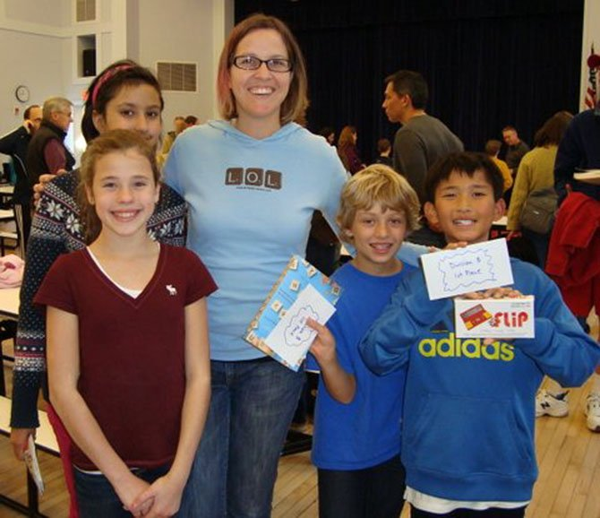

A look inside the strategy, vocabulary, and competitive fire behind every tile rack.
I was first exposed to the world of scrabble when I joined my elementary school art teacher's scrabble club. I don't recall a specific experience getting me hooked, but I know that I came to love it quickly. In fourth grade, I competed in the national school scrabble championship held in Orlando, Florida, and it was most definitely foundational to my long-lasting love of scrabble.
I played throughout the rest of elementary school with a few wins at local DC tournaments, then when middle school came and outlets to play diminished, so did my involvement. Now, I get excited at any chance I get to play, but that is rarely ever with my wife who vows to not entertain my domination.
Looking forward, I plan to play my future boss, who was excited to talk about my scrabble history in a job interview that happened just a few months ago. So, it's safe to say that scrabble keeps paying its dividends.

This video from the 2019 North American Scrabble Championship shows the intensity and strategy that define top-level play.
This interactive Tableau visualization explores popular board games and their ratings. Filter and hover to discover how Scrabble stacks up against other classics.